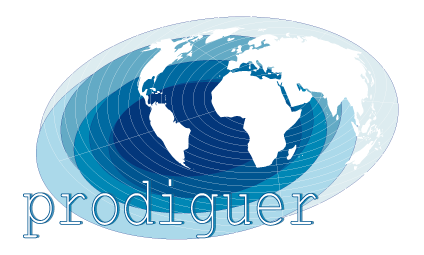

Welcome to the PRODIGUER working team main page.
|  |
The PRODIGUER working team aims to ensure the pivotal position at the interface between French researchers and international climate data. This activity includes:
Such a distribution service will be referred to different simulations analysis projects by the scientific community, to the achievement of regional simulations based on the results of large-scale projections, and the dissemination of results for many impact studies. The PRODIGUER working team is part of networks providing data simulations at international and European levels and make data available for emerging climate services. The relevant simulations, formats and protocols used follow the recommendations bet up to the dissemination of CMIP simulations whose results will feed into the fifth IPCC report.
The Pierre Simon Laplace Institute (IPSL) is a research federation from the National Centre of Scientific Research (CNRS) in close relationship with Versailles Saint-Quentin-en-Yveslines and Pierre and Marie Curie universities. The IPSL counts 9 laboratories and about 1,400 researches in clmate science. The PRODIGUER working team is part of climate modelling section of the IPSL. At the national leval, our task is supporting the IPSL community and ensuring the coordonation with French partners and especially the national computing center (CNRM, CERFACS, TGCC, IDRIS, CINES). In Europe, we act as part of the infrastructure for the European Network of the Earth System modelling project (IS-ENES) by corrdinating with European data centre (BADC, DKRZ). A large part of our workload consist in operational implementation and strengthening of the Earth System Grid Federation (ESG-F). The ESG-F extends our task to the international level: we raise the needs of French partners on the forefront of the international discussions. The IPSL PRODIGUER members are heavily involved in the coordination and policy of ESG-F and all its related services.
| Name | Affiliation | |
|---|---|---|
| Sébastien DENVIL | IPSL/CNRS | sdipsl@ipsl.jussieu.fr |
| Guillaume LEVAVASSEUR | IPSL/UPMC | glipsl@ipsl.jussieu.fr |
| Nicolas CARENTON | IPSL/CNRS | ncarenton@ipsl.jussieu.fr |
| Mark GREENSLADE | IPSL/UPMC | momipsl@ipsl.jussieu.fr |
| Jérôme RACIAZEK | IPSL/CNRS | jripsl@ipsl.jussieu.fr |
| Nikolay KADYGROV | IPSL/UPMC | nkadygrov@ipsl.jussieu.fr |
| Atef BENNASSER | IPSL/UPMC | abennasser@ipsl.jussieu.fr |
The PRODIGUER working team designs, develops and deploys applications to support research teams from the IPSL. These tools are intended to facilitate the distribution, access and analysis of international climate data. At the interface between researchers and data, the PRODIGUER team is part of the Earth System Grid Federation (ESG-F) which controls the distribution of global climate data. We manage deployment and maintenance of French datanodes and raise the needs of French scientists on the forefront of the international discussions. The PRODIGUER working team also provides support and assistance in the analysis of data by developing and updating various tools within the reach of researchers.
2008 - FP7 presentation2009 - GIS committee presentation2009 - MISSTERRE presentation2009 - CMIP5 resources needs presentation2009 - SOERE partner presentation2010 - GENCI CCRT storage presentation2010 - IS-ENES SA2/JR14 presentation2010 - EGU talk S. DENVIL2010 - JEDI group presentation2010 - EGU talk M. GREENSLADE2014 - EGU poster N. CARENTON2014 - ESGF France meeting